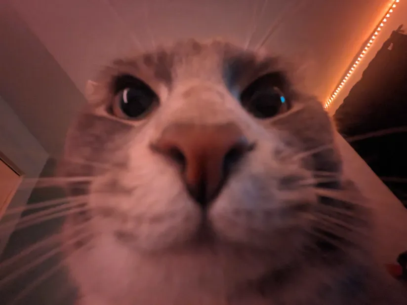

Felix le chat de la famille Phoeung Mathieu

Félix est un véritable rayon de soleil dans ma vie. Avec son pelage doux et ses grands yeux curieux, il a cette capacité à apporter de la joie au quotidien. Chaque matin, il vient se blottir contre moi, me réchauffant le cœur.
Sa personnalité espiègle me fait rire quand il joue avec ses jouets ou se lance dans des cabrioles. Il sait toujours quand j'ai besoin d'un câlin réconfortant, et ces moments partagés sont précieux.
En somme, Félix n'est pas qu'un simple chat ; il est un ami fidèle qui rend chaque jour un peu plus lumineux. Je suis vraiment reconnaissant de l'avoir à mes côtés.
Mes Coordonnes
Ville de Boisbriand Quebec, Canada
J7H 1S9
Mes liens